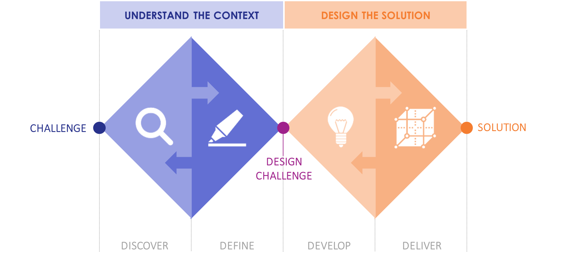
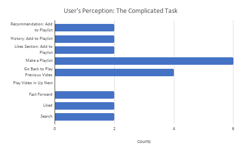
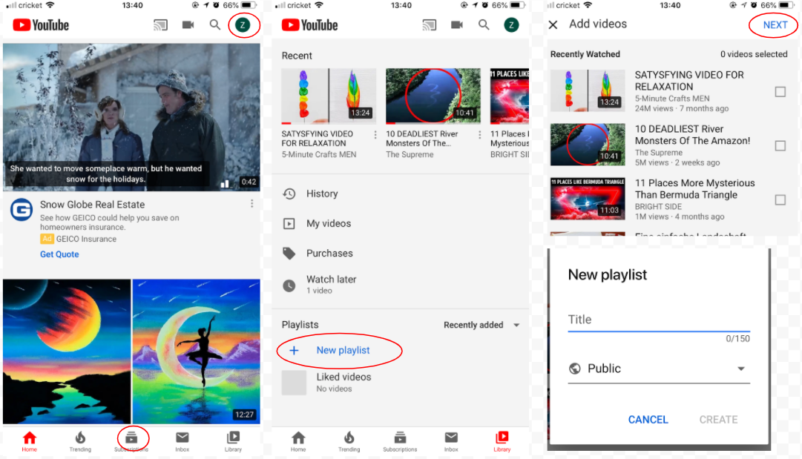
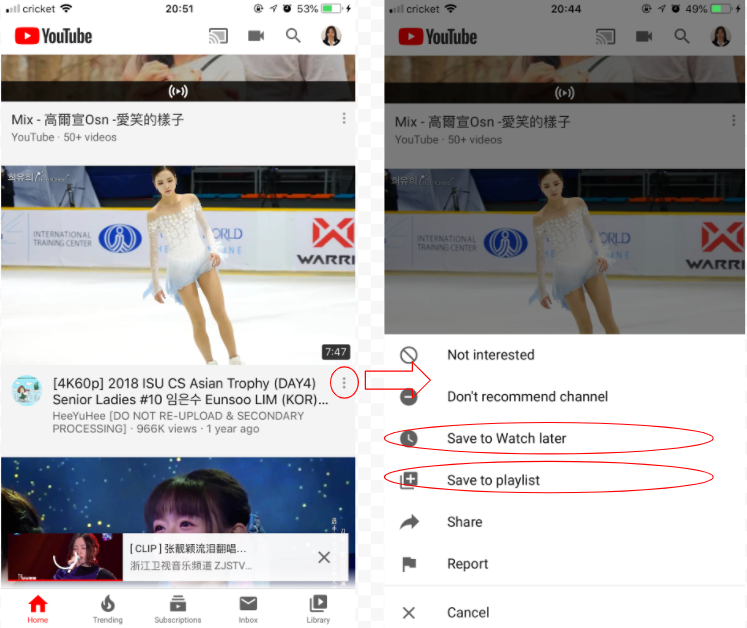
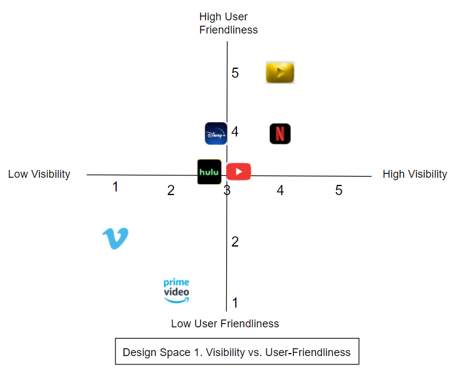
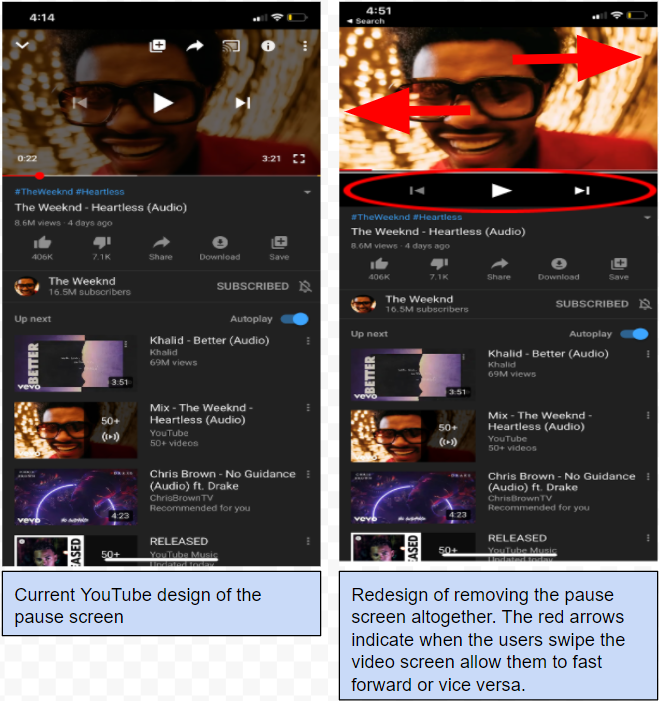
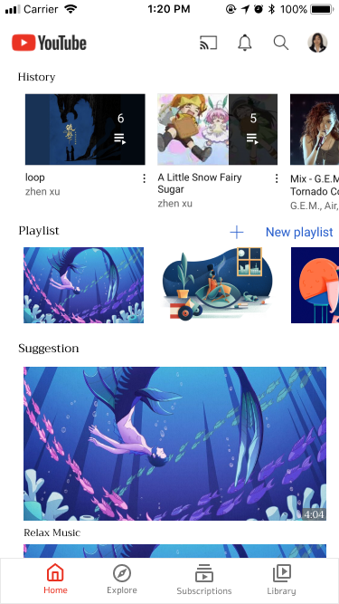
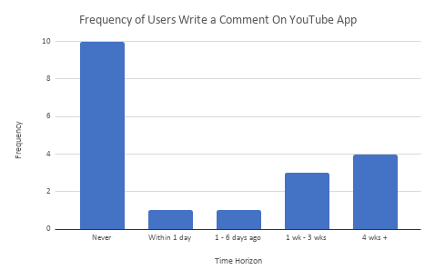
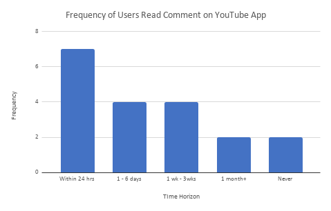
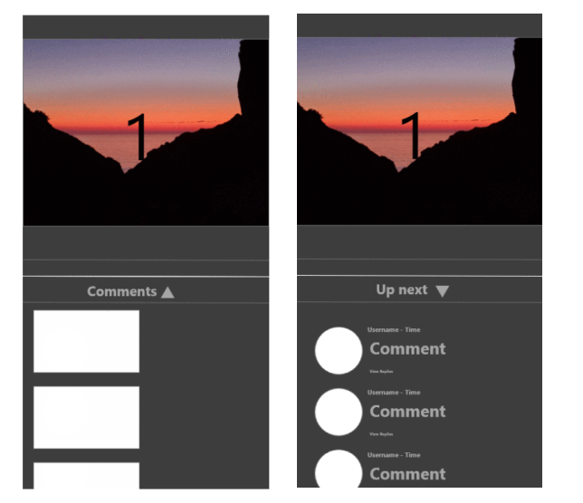

My Role
UX Designer / Lead
Time Range
4 Weeks
Team
Zhen Xu, Cole Franklin, Danny Fung, Jovanni Valdez, Katherine Ucelo, Tina Li
Introduction
For this project, we choose YouTube’s mobile application as our examined product. Many users might be familiar with the YouTube website as it serves as a video-sharing platform. It involves various video contents suited for everyone, like professionals, educators, students, and normal householders. As YouTube operates as Google’s subsidiary, the company aims to offer a well developed product to the public, but there are still many problems such as fast forwarding, double tapping command and creating a playlist for designers to reconsider while constantly assessing what is demanded from the users and how to offer a more user friendly application to them.
We aim to pinpoint some problems that the users encountered as well as the trends of using the application. In return, these findings serve as a guidance to evaluate the current design space. Essentially, we want to redesign the YouTube application, so the user will have a better overall interaction experience. This project utilizes the double diamond diagram to figure out how to do the right things and then proceed to doing things right.
Problem Findings
Before collecting data, our first step was to come up with potential problems that users commonly encountered. In order to do so, each team member spent time navigating through the mobile version of YouTube. Afterward, we debriefed on what were some common problems we encountered as a user, so we can turn those into our tasks for the set of interview questions. By observing how the interviewees performed the tasks, we are able to collect both qualitative and quantitative data to assess what are the potential trends and errors. For the other parts of the interview questions, they are aiming at evaluating the interviewee’s perceptions on YouTube, what features they value, and understand their preferences. The interview questions are structured into 2 parts: pre-task questions and the task itself. One additional reflection question is placed toward the end with the purpose to quantify which tasks are considered to be more time consuming and complicated within our pool of interviewees. The interview questions are listed as the following:
Pre-Task Questions
- How many hours on average per day do you use Youtube mobile app?
- When is the last time you left a comment under a video you watched?
- When is the last time you read over the video’s comments?
- What are some commands you commonly use with the YouTube mobile app?
- Relative to YouTube website, do you have any difficulties navigating the YouTube mobile app?
Tasks
The tasks are fundamental for us to gather the observational data such as problems users my experience while using the app. Before conducting an actual interview, our group generated the ideas by directly interacting with the YouTube app to get familiarized with the product and acquire first-hand experience. We then discuss what are potential tasks that the users may encounter. Here, it’s important to note that some of the tasks we came up with are the problems we as a user also have difficulty performing them. By incorporating our own user experience, we want to observe if the tasks which we did not perform well are a coincidence or they are a common problem that interrupt many users' experience when they interact with the YouTube app.
- Search the video named: "Crazy Frog"
- Liked the video
- Fast forward the video
- Play the video in the up next
- Go back to the previous video: "Crazy Frog"
- Make a new playlist
- Add video from the recommendation page to the newly made playlist
- Add any videos from your history to the newly made playlist
- Add any videos from your liked video to the newly made playlist
Debrief
- Which tasks did you find more complicated?
The foundational model we used to conduct our interviews is the master-apprentice model, where each of the group members conduct the interviews in person. This allows us to observe how the participants perform their tasks more in-depth as well as asking follow up questions. The follow up questions gave the participants an opportunity to justify why they perform the way they do.
Interpret Findings
Pre-Task Questions and Debrief Analysis
The question about how many hours the interviewees use YouTube app per day on average creates a benchmark for us to do the analysis further, such that those who used the apps 3+ hours are considered to be active users, else if it’s less than 3 hours, we considered them to be an inactive users. This benchmark allows us to observe if the active users will perform the tasks more smoothly in comparison to the inactive users.

Before asking the interviewees to perform the tasks, there is a question asking them about whether they find it difficult relative to YouTube. 16 out of 19 of the interviewees respond “no” such that they do not perceive there’s any difficulty interacting with the YouTube mobile app.
The interesting phenomena is comparing this pre-task question to the reflection question, asking which tasks do they consider them as complicated. Based on the data, there’s only one interviewee who answered “none” in the reflection section, and the rest of the respondents pinpoint at least 1 task that they consider to be complicated after performing the tasks.
The data also imply that 6 out of the 7 active users also reflect on some tasks as complicated, which suggests the frequent exposure to YouTube was not enough for them to navigate through all of the assigned tasks. One potential reason is the active users were only exposed to certain commands on a daily basis, while there are some features they hardly use- ex. the playlist function- which may cause several disruptions while interacting with the app.
Problems and Trends
Mistakes
By observing the above section, it's observable that making a playlist and going back to the previous video are considered to be the most complicated tasks. One reason for these perceptions mainly originate from the insufficient knowledge of the function. For instance, 4 out of the 19 interviewees were not aware of the playlist features. More specifically, 2 of those interviewees heard of the playlists, but they never attempt to try to explore the function given that they believe they are interacting with the YouTube app just fine on a daily basis. Because of their insufficient knowledge, those 4 interviewees within the 19 interviewees end up conducting a knowledge-based mistake. As a result, the interviewees end up navigating through the YouTube app using trial and error. By observing how the interviewees attempt to perform the task of making a playlist, the gulf of execution is wide as they have difficulty figuring out how they should perform the operation. The figure below demonstrates one process of making a new playlist but the interviewees failed because there are lack of visible signifiers and are not intuitive to visualize the process in the first place if they have never interacted with the process.
Slips
One common error that the interviewees made throughout the interview is the action-based slip, where they were clear of what to do, but they somehow misperform the action by accidentally clicking the wrong thing in the end. For instance, 4 out of the 19 interviewees accidentally click the button that skips to the next video while attempting to double tap to fast forward the video.

Here, the problem is not being able to discover the double tap function serves the purpose to fast forward given that 7 out of the 19 interviewees are considered to be an active users, which mean they are expected to know well about different types of shortcuts, especially skipping within a played video is very common trend in modern fast paced lifestyle. Instead, the reason behind this action-based slip is having the two functions placed right next to each other.
The mapping of the design is set up correctly since it aligns with the cultural conventions that next and fastforward are associated with right, whereas, previous and backward are associated with left. However, the reason for the action-based slip has to do with the tradeoff of a mobile application: visibility and compactness. Given the physical size of a phone screen, the app can only make some features visible in the compacted environment inherent in the mobile application. To build up a mapping that aligns with the user's conceptual model and take the tradeoff into consideration, the designer ends up placing the 2 functions right next to each other hidden in the video’s screen. The placing of the functions, however, generates a high likelihood for the users to misclick the button since they are placed close together.
To further elaborate on the fast forward design, 7 out of the 19 interviewees use the play bar to fast forward.

One interviewee pinpointed the reason for him to avoid double tapping to fast forward is because he had difficulty controlling the speed to fast forward and reverse backward. He insisted that he often end up going too far because he sometimes found himself continuously tapping the spot. This is a type of action-based slip- capture slip- where the user has the tendency to continue the movement given the previous constant motion of tapping on one place. In the mistake section, the playlist feature is considered to be a bad design because not many people are aware of the features. The double tap command to fast forward is equivalent to the playlist feature; only this time, the users intentionally avoid to utilize the functionality because they predict themselves to make some types of error. Essentially, both playlist and fast forward features did not offer more convenience to the users.
A common trend that dominante the interviews is that many of them did not end up using that many shortcuts as expected. We previously observed there are 7 out of 19 users who are considered to be active users; yet, they still encounter the same issue in comparison to other inactive users (those who only used less than 3 hrs per day). There are many ways to complete the assigned tasks during the interview, but each of them has a shortcut for the users to complete it more smoothly. However, both inactive and active users end up showing indifferent performance of taking the longer route to complete some of the tasks. For example, when the interviewees were asked to go back to the previous video, they minimize the current video played to go back to the search result and find the previous video in the search result. The shortcut that the active users are expected to use is clicking the video screen in the middle and pressing the left button. However, out of the 19 interviewees, there are 8 of them who perform this redundant process. Within the 8 interviewees, 4 of them are considered to be active and the other half is considered to be inactive users. One of the active users who performed such a long process was the one who failed to recognize the difference between her transition from iPhone to Android mentioned in the rule-based mistake section.
Lastly, 5 out of the 19 interviewees made a description-similarity slip when they were asked to add a video to an existing playlist. Instead of clicking into the video and pressing the “save” button as the above example demonstrates, some interviewees click into the 3-dots button that directly generates the menu
Five of them end up misclicking the “save to watch later” instead of “save to playlist.” This type of error is related to the similar word usage of the menu. In addition, the users’ mental model can situated an assumption that the most important features are listed as the first. Given that “save to watch later” is placed above “save to playlist”, the interviewees might spot the first tab at their initial glance.
Design Space
In Design Space 1, YouTube is the current design. Other alternative video platforms include Disney Plus, Vimeo, Hulu, Netflix, and Amazon Prime Video while the yellow YouTube logo is the redesign. The pattern of the video platform in the design space shows that highly visible features will generate a more user friendly experience while interacting with the app and vice versa. This means as the demanded functionalities are more visible, there is a high likelihood for the users to rate the product as enjoyable given that the product provides clear instructions on how to navigate through the application. 8 out of the 19 interviewees had indicated the common YouTube feature is to search up videos. Within the 19 participants, all of them were able to locate where to perform the search task simply because the search icon is prominent in the top right corner regardless of which page the users are situated in. Evaluating YouTube as a whole, its mobile application is moderately visible in comparison to other competitors as there are some features- like the playlist- that remain unused.
From the debrief analysis section, making a playlist was perceived as the most complicated tasks out of the 19 interviewees. Not many interviewees are aware of the playlist features. In addition to their unawareness, the lack of clear signifiers that communicate how to navigate through the process made it challenging for them to perform the task for the first trial. This implies YouTube can improve the user’s perception on user-friendliness with clearer signifiers that strengthen the user's understanding and the product’s discoverability. Building off from the successful example of search icon, YouTube can use an explicit visual signifier to illustrate where action associated with the tasks that users want to perform should take place.

In Design Space 2, it illustrates lower error correlates with higher utilization of the product’s inherent features. This correlation also links whether the users will consider the app as a desirable product. Take note Disney Plus is an exception given that this video platform is aiming for a specific target as it only offers limited video contents related to Disney.
Based on the problem analysis, the common error that users encounter is knowledge-based mistake and action-based slips. Design Space 1 portrays using clearer signifiers to enhance the visibility and to resolve the problem of insufficient knowledge. Similarly, the Design Space 2 aims to assess the pattern of mitigating the other commonly made error. 4 out of the 19 interviewees who made the action-based slip were when they attempted to fast forward by double tapping the video screen. Within the 19 participants, 7 other participants end up fastforwarding the video by clicking the middle of the middle screen. One interviewee explicitly declared a potential reason for these 7 participants approaching the task differently. The interviewee insisted he wants to avoid the error he foresees himself made if he indeed performs the double tapping command. This mentality explains an expected behavior behind the design space such that the user’s personal experience serves as a guide for them to evaluate if it’s worthwhile to use the features. It could be the fact that the users had attempted multiple times of using the command yet they failed most of the time, which prevented them further utilizing the shortcut and ignoring the feature altogether. YouTube can eliminate some of the affordances- like getting rid of the double tapping command- or separating the similar commands apart from each other, so it does not lead the users to make the slip. Overall, the Design Space 2 is an assessment tool to demonstrate functionalities that prompt less error and increase its utilization. In fact, the goal of making shortcuts or other functionalities available is to provide convenience for the users. But if the functionalities were intentionally avoided by the users, it defeats the purpose of incorporating them into the product.
Redesign
After the problem analysis, it constructed the scope of this project as making the commonly used features more visible with less likelihood of making an error. The reflection question offers a foundation of prioritizing which redesign aspects should take into consideration: going back to previous played video and the display of playlist feature.
One possible way to mitigate the error of fast-forwarding and guide the users to use the shortest route in terms of going back to the previous played video is by replacing the elements in the pause screen right under the video.
The 4 interviewees who made an action-based slip of skipping to the next video when they intended to fast forward were triggered by a design flaw such that the two features- hidden fast forward command and apparent next video button- are placed close to each other. The minimal change of removing the build-in pause screen is able to separate the skip function (going back to previous or next video) from the fast forward function. Indeed, by explicitly placing the pause function and the skip function, the users do not need any built-in conventions to figure out where to perform the action. This offers a clear system image and limits any discrepancy between the designer’s mental model and the users’ mental model. The implementation of this bar is meant to make features visible enough so users are not only aware of the shortcuts available for them but also for users to be sure of what they are tapping on, and this way reduces the chances of making an unintentional error. One tradeoff with this redesign is placing the feature within the compacted environment. However, in consideration of the user’s experience of watching a video, the elimination of the pause screen from the played video will not disrupt the users from continuing watching the video as one interviewee had indicated the pause screen is sometimes blocking the video contents.
The redesign shows that the fast forward function remains hidden. The only change is instead of double tapping, the users will swipe the video screen either to the right or to the left for fast forwarding and going backward. One tradeoff remains the same as the current design such that the first time users will need to attempt several trials and errors to discover this design aspect. However, the swiping action is not expected to be the most discoverable function given that the data shows that 7 out of the 19 interviewees discover the alternative way of dragging the play bar. Both dragging and swiping are similar actions, which implies the users should have an easy adaptation since it is correlating with their established current mental model.
Another redesign aspect focuses on mitigating the error when the interviewees attempt to make a playlist. As a company, the first evaluation before redesigning a feature is if the feature is worth existing through assessing how important the features are based on the users’ perceptions. For the below redesign in regard to making a playlist and adding videos to the playlist, there is an assumption that the playlist serves some value to the users.
First, the data shows that there are 4 interviewees who make a knowledge-based mistake originated from their unawareness of the playlist feature. The solution is then making the playlist feature upfront, so the users can easily recognize the feature’s existence.
The above figure shows one redesign solution: replacing the advertisement spot to History section and playlist section. Currently, the YouTube app top video is an ad placement and anything below is a suggested video based on what the users watched frequently. Placing the playlist in the homescreen increases the visibility of letting the users to discover the feature’s existence. The tradeoff for this design is violating the stakeholder’s interests such that they foresee a potential of losing the revenues generated by ad. However, one consideration is the current YouTube model had enough advertisement played before each video; thus, removing one part of the ad section is only a small proportion loss of the revenues. Aside from the playlist function, using explicit descriptions of what is showing on the homepage serves to have a better organization instead of exposing the users to a block of videos without any clear indication.
The last redesign aspect focuses on the comment feature offered by the current YouTube mobile application. Although the interview questions did not include any tasks that are related to interacting with the comment section, there are two pre-task questions that evaluate how important the comment feature is to the users
To summarize the data findings, the trend is most of the interviewees (14 out of 19 interviewees) hardly write any comments under the video they watched. However, 11 out of the 19 interviewees engage more frequently on reading comments under the video
 From this finding, the comment feature is valuable to the YouTube users given their frequent exposure of interacting with the comment section. As a result of these perceptions, it is beneficial to improve the convenience to a commonly interactive feature. A pilot study that was launched within the group members is observing how individuals interact with the comment features. The inconvenient part that frustrated the users is scrolling through all the videos suggested in the up-next section to locate the comment section. From the fast forwarding function, it is expected a constant motion may eventually lead to the users making errors, like action-based slip- more specifically: capture slip. In addition, the current location of the comment section might decrease user’s interaction since it is a hassle to scroll through a long list to reach a demanded spot.
One proposed solution is to provide an option for the users to minimize the “up next” sections by including a “drop down” menu that would compress all of the videos into one single bar
This redesign offers convenience to the users and has the comment section more visible to them. As Design Space 1 demonstrates, the more visible the perceived important features are, the higher chance for the users to rate the product as more user-friendly. In return, this will increase user engagement with the app. One tradeoff associated with this design is how the users adapt into this invention given the current YouTube app design had lasted for a long time. In other words, the users will need a period of time to be adaptive to any new changes.
This redesign relating to the comment section suggests the strategy for the designers to improve the YouTube mobile application. Through assessing the potential issues of the product’s features and launching pilot studies before gathering actual data allow the designers to gain helpful insights to make iterative improvements toward the current design. Afterward, the data gathering process and analyzing the data will then become solid evidence of portraying what needed to change in accordance with the user’s desires.
Reflection
To summarize the findings for the YouTube product, the common problems have to deal with unclear signifiers that make it difficult for the users to interact with some new features for the first time. Throughout the redesign section, there are some redesigns that remain minimal changes and some elimination of the redundant features. The reason to avoid drastic change is the designer has to take into consideration that the users had been exposed to the established YouTube product for a period of time. The drastic changes may risk the misalignment of the users’ current mental models, which are derived from the current YouTube app design. Hence, the ideal solution is to incrementally improve the product and develop a fast prototype to test out how the users interact with the redesign. In return, we want to gather feedback from users to refine the scope of the project and make any adjustments or improvements in accordance with the user’s needs. Essentially, YouTube is a video platform that wants to provide an enjoyable watching experience to their users; hence, any improvements should tailor toward them.